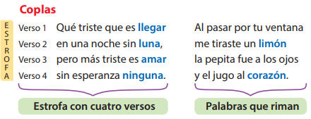

Exploro para recordar
1.Lee las coplas y descubre qué semejanzas y diferencias encuentras entre ellas.
Las estrellas en el cielo
caminan de dos en dos,
así caminan mis ojos
negrita por verte a vos.
Dicen que las penas
se ahogan en el mar,
qué pena que todas
las mías saben nadar.
He llegado a tu balcón
con esta bella flor
para demostrar el amor
que siente mi corazón.
 Reflexiono para avanzar
Reflexiono para avanzar
1. ¿Qué características tienen las coplas que leíste?
2. Lee las coplas populares y observa su estructura.

 Comprendo para saber
Comprendo para saber
Las coplas son estrofas de cuatro versos que tienen rima o igualdad de sonidos entre dos o más palabras finales de cada verso, a partir de la última sílaba. Expresan las creencias, el humor y los sentimientos de un pueblo.
Son parte de las manifestaciones populares, de la expresión artística y de la participación en la vida social de la comunidad. Generalmente se las recita al son de una guitarra.
Su intención comunicativa es transmitir, con gran carga sentimental, el amor y el desamor. Este es su tema principal. Expresan también hechos históricos o costumbres locales.
Características de las coplas:
• Lenguaje coloquial y directo
• Describen las características de un lugar o una región.
• Sirven de letra para canciones populares.
• Por lo general, se utilizan instrumentos musicales para interpretarlas.